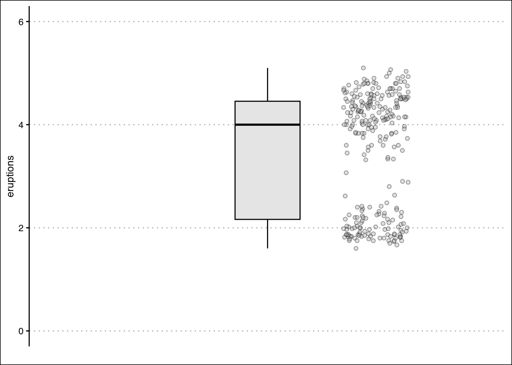
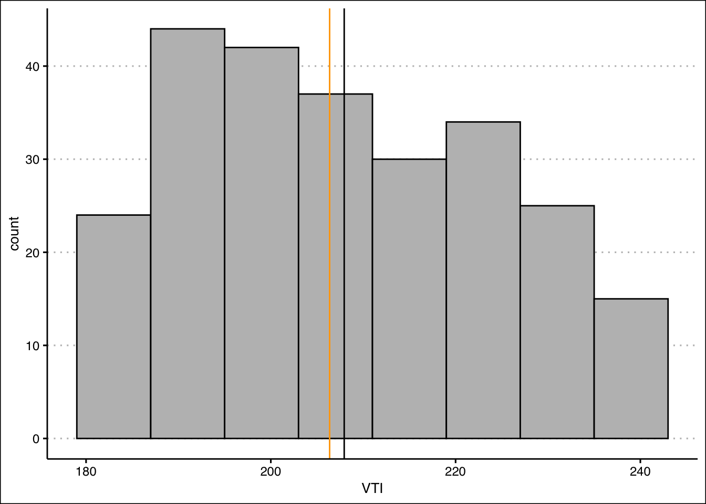

5 Descriptive Stats V
There are statistical measures that describe the shape and distribution of the data beyond simple measures of central location or dispersion. They provide a view of how data is spread out, where it concentrates, and how it deviates from what might be expected. The tools shown below will help you describe the data’s shape, symmetry, and anomalies.
5.1 Quantiles and Percentiles
A quantile is a location within a set of ranked numbers (or distribution), below which a certain proportion, \(q\), of that set lie. If we instead express quantiles as a percentage, they are referred to as percentiles.
Ex: Imagine all your data points lined up from smallest to largest. If you say you’re looking at the 25th percentile, it means you’re finding the value below which 25% of your data falls. If you had 100 test scores, the 25th percentile would be the score where 25 students scored lower than that, and 75 scored higher or equal. It’s a way to see where a value stands in relation to the rest of the data in terms of percentage.
To calculate a percentile we follow the steps below:
Sort the data in ascending order. Each point has now a location. The smallest number will be first, the second smallest number will be second, etc.
Compute the location of the percentile desired using \(L_{p}=\frac{(n+1)P}{100}\) where \(L_{p}\) is the location (in the sorted data) of the \(P_{th}\) percentile, and \(P\) is the percentile desired.
The data point at location \(L_p\), is the the \(P_{th}\) percentile.
Example: Let’s use the IQ scores for a group of students to find the 25th percentile. \(IQ=\{80,100,110,75,130,90\}\).
We sort the data: \(IQ_{sorted}=\{75,80,90,100,110,130\}\)
Find the location of the 25th percentile: \(L_{25}=7 \times 0.25=1.75\). The 25th percentile is in the position 1.75 of the sorted data.
Retrieve the 25th percentile: Since position 1 is 75 and position 2 is 80, the 25th percentile lies 0.75 of the way between position 1 and 2. Hence, the 25th percentile is \(P_{25}=75+0.75(80-75)=78.75\).
5.2 Chebyshev’s Theorem
Chebyshev’s Theorem is an important theorem, as it helps you form an expectation of the proportion of data that must lie between a given standard deviation from the mean. This offers a baseline to understanding the range and distribution of your data, and aids in detecting outliers. Formally, Chebyshev’s Theorem states that regardless of the shape of the distribution, at least (\(1-1/z^2\))% of the data lies between \(z\) standard deviations from the mean.
Ex: For a given data set, we want to know at least how much of the data is between two standard deviations. Substituting 2 into Chebyshev’s formula yields $1-1/4=0.75. Hence, 75% of the data lies between two standard deviations from the mean.
5.3 The Empirical Rule
Whereas Chebyshev’s theorem holds for any data distribution, the empirical rule is a bit more precise when looking at “bell shaped” data. Formally, the Empirical Rule or (\(68\),\(95\),\(99.7\) rule) states that \(68\)%, \(95\)%, and \(99.7\)% of the data lies between \(1\), \(2\), and \(3\) standard deviations from the mean respectively. The rule requires that the data be bell shape (normally) distributed.
5.4 Outliers Z-Scores
Given the boundaries set by both the empirical rule and Chebyshev’s theorem, we can classify points as being common (normal) and not common (outliers). Specifically, outliers are extreme deviations from the mean. They are values that are not “common” or rarely occurring. Since both the empirical rule and Chebyshev’s theorem state that a large proportion of the data is between three standard deviations, it would be uncommon to have a data point that is more that three standard deviations away from the mean.
To identify outliers we use a z-score, which is a measure of distance from the mean in units of standard deviations. It can be calculated for any data point in your variable by using the formula \(z_{i}=\frac{x_i-\bar{x}}{s_x}\). By definition, \(z\)-scores above \(3\) are suspected to be outliers.
Ex: On Jan 22, 2006 Kobe Bryant scored 81 points against the Toronto Raptors. He had averaged 30 point per game with a standard deviation of 4 points. If we calculate the z-score we get: \(z_{81}=\frac{81-30}{4}=12.5\). This mean that 81 is 12.5 standard deviations away from the mean, making this value extremely rare.
5.5 Skew
A measurement of skew, identifies asymmetry in the distribution of data. If most of the data leans towards one side, it’s skewed. If it leans to the left, it’s left-skewed or negatively skewed, meaning the tail on the left side is longer. If it leans to the right, it’s right-skewed or positively skewed, with a longer tail on the right. If the data is evenly distributed, it’s not skewed at all, it’s symmetric. To determine if the data is skewed, calculate the Pearson’s Coefficient of Skew. \(Sk=\frac{3(\bar {x}- Median)}{s_x}\). The distribution is skewed to the left if \(Sk<0\), skewed to the right is \(Sk>0\), and symmetric if \(Sk=0\).
The image below shows the different types of skew:
Ex: Assume that for a variable the mean is 10, the median is 8, and the standard deviation is 3. The Pearson coefficient of skew is equal to \(Sk=3(10-8)/3=2\). Since the skew is positive, we expect the distribution to be right skewed.
5.6 Five Point Summary
A popular way to summarize data is by calculating the minimum, first quartile, median, third quartile and maximum (five point summary). This gives us a good idea of how data is distributed. We can additionally inquire how the middle 50% of the data varies. Recall, that we can use a range to assess dispersion. The interquartile range (IQR) quantifies the dispersion of the middle 50% of the data. Formally, the IQR is the difference between the third quartile (75th percentile) and the first quartile (25th percentile).
Example: Let’s use the IQ scores for a group of students once more. Recall that the data is given by \(IQ=\{80,100,110,75,130,90\}\). The minimum and the maximum are easily identified as \(Max=130\) and \(Min=75\). The first quartile (\(P_{25}\)) was calculated in 1.1 as 78.75. Using the same steps the third quartile (\(P_{75}\)) is 115. The median is the average between the third and fourth numbers \(Median=190/2=95\). The five point summary is given in the table below:
| \(Min\) | \(P_{25}\) | \(Median\) | \(P_{75}\) | \(Max\) |
|---|---|---|---|---|
| 75 | 78.75 | 95 | 115 | 130 |
To calculate the interquartile range we find the difference between the 75th and 25th percentiles. \(IQR=115-78.75=36.25\) which means that the middle 50% of the data has a range of 36.25.
5.7 Outliers IQR
An alternate way to identify outliers is by using the interquartile range. This measure and the z-score method can disagree. To calculate the outliers using the IQR, we first calculate \(Q_1-1.5(IQR)\) and \(Q_3+1.5(IQR)\), where \(Q_1\) is the first quartile, \(Q_3\) is the third quartile, and \(IQR\) is the interquartile range. If the observation (\(x_i\)) is less than \(Q_1-1.5(IQR)\) or greater than \(Q_3+1.5(IQR)\), then it is considered an outlier.
Ex: Consider once more the IQ data. \(IQ=\{80,100,110,75,130,90\}\). The lower limit for on outlier is given by \(LL=Q_1-1.5(IQR)=78.75-1.5(36.25)\) or \(LL=24.375\). The upper limit is given by \(UL=Q_3+1.5(IQR)=115+1.5(36.25)\) or \(UL=169.375\). Any data point outside the range [24.375,169.375] is considered an outlier. In other words, 200 and 20 would be outliers, but 100 would not.
5.8 Quantiles and Quartiles in R
R quickly calculates quantiles for a given variable (vector) using the quantile() function. Below we use the IQ example once more.
IQ <- c(80,100,110,75,130,90)
quantile(IQ, type=6) 0% 25% 50% 75% 100%
75.00 78.75 95.00 115.00 130.00 You will notice that an extra argument type has been been passed into the quantile function. Since, there are several ways to calculate quantiles, R allows you to identify which method you want to use. In sec 1.1 we explained method 6.
5.9 Outliers in R
To identify outliers we can us the scale() function. We’ll consider the first five observations in the faithful data set.
head(scale(faithful),5) eruptions waiting
1 0.09831763 0.5960248
2 -1.47873278 -1.2428901
3 -0.13561152 0.2282418
4 -1.05555759 -0.6544374
5 0.91575542 1.0373644The data shown above are z-scores for the first five observations of the faithful data set. As you can see none of the observations are outliers, as they are all less that 3 standard deviations away from the mean.
If we want to filter all observations that are say 1.3 standard deviations away from the mean, we can use the following command from tidyverse:
library(tidyverse)
faithful %>% mutate(z_eruptions=scale(eruptions)) %>%
filter(scale(eruptions)>1.3) eruptions waiting z_eruptions
1 5.067 76 1.383614
2 5.100 96 1.412526
3 5.033 77 1.353825
4 5.000 88 1.324912This confirms that there are no outliers in the eruptions variable.
5.10 Box Plots in R
A box plot is a graph that shows the five point summary, outliers (if any), and the distribution of data. It can be easily constructed using geom_boxplot() in R. Let’s use the eruptions variable once more.
library(ggthemes)
faithful %>%
ggplot() +
geom_boxplot(aes(y=eruptions),
fill="lightgrey", alpha=0.5,
col="black", width=0.3) +
theme_clean() +
scale_x_continuous(breaks = NULL, limits=c(-1,1))+
ylim(limits=c(0,6))
The boxplot highlights the minimum just below 2, the maximum around 5, the first quartile just above 2, the median at 4, and the third quartile just above 4. Any outlier would be shown as a point beyond the whiskers of the box plot.
We can also overlay the data to the boxplot by using the geom_jitter() function. The data points allow us to see how the data is distributed. The code is below:
faithful %>%
ggplot() +
geom_boxplot(aes(y=eruptions),
fill="lightgrey", alpha=0.5,
col="black", width=0.3) +
theme_clean() +
scale_x_continuous(breaks = NULL, limits=c(-1,1))+
ylim(limits=c(0,6)) + labs(x="") +
geom_jitter(aes(y=eruptions,x=0.5),
width=0.15, pch=21,
alpha=0.4, bg="grey")
5.11 Skewness in R
Unfortunately, base R does not have a function to calculate the Pearson Coefficient of skewness. Hence, we will have to install the e1071 package. The package contains the function skewness() which makes the estimation of skew simple. Below is the code to calculate the skewness for the eruptions variable.
library(e1071)
skewness(faithful$eruptions)[1] -0.4135498The result indicates that the distribution is mildly skewed to the left.
Here is a summary of the functions used in this section:
The
quantile()function returns the five point summary when no arguments are specified. For a specific quantile, specify the probs argument.The
scale()function calculates the z-scores for a vector of values.The
geom_boxplot()command returns a box plot for a vector of values.The
skewness()function is found in thee1071package. It takes as an input a vector of values and returns the Pearson Coefficient of Skew.
5.12 Exercises
The following exercises will help you practice other statistical measures. In particular, the exercises work on:
Constructing a five point summary and a boxplot.
Applying Chebyshev’s Theorem.
Identifying skewness.
Identifying outliers.
Answers are provided below. Try not to peak until you have a formulated your own answer and double checked your work for any mistakes.
Exercise 1
For the following exercises, make your calculations by hand and verify results using R functions when possible.
Use the following observations to calculate the minimum, the first, second and third quartiles, and the maximum. Are there any outliers? Find the IQR to answer the question.
3 10 4 1 0 30 6
Answer
The minimum is \(0\), the first quartile is \(2\), second quartile is \(4\), third quartile is \(8\), and maximum is \(30\). \(30\) is an outlier since it is beyond \(Q_{3}+1.5 \times IQR\).
Quartiles are calculated using the percentile formula \((n+1)P/100\). The data set has seven numbers. The first quartile’s location is \(8/4=2\), the second quartile’s location is \(8/2=4\) and the third quartile’s location is \(24/4=6\). The values at these location, when data is organized in ascending order, are \(1\), \(4\), and \(10\).
In R we can get the five number summary by using the quantile() function. Since there are various rules that can be used to calculate percentiles, we specify type \(6\) to match our rules.
Ex1<-c(3,10,4,1,0,30,6)
quantile(Ex1,type = 6) 0% 25% 50% 75% 100%
0 1 4 10 30 The interquartile range is needed to determine if there are any outliers. The \(IQR\) for this data set is \(Q_{3}-Q_{1}=9\). This reveals that \(30\) is and outlier, since \(10+1.5 \times 9=23.5\). Everything beyond \(23.5\) is an outlier.
- Confirm your finding of an outlier by calculating the \(z\)-score. Is \(30\) an outlier when using a \(z\)-Score?
Answer
If we use the \(z\)-score instead we find that \(30\) is not an outlier since the \(z\)-score is \(Z_{30}=2.15\). This observation is only \(2.15\) standard deviations away from the mean.
In R we can make a quick calculation of the \(z\)-Score to confirm our results. The \(z\)-score is given by \(Z_{i}=\frac{x_{30}-\mu}{\sigma}\).
(Z30<-(30-mean(Ex1))/sd(Ex1))[1] 2.148711- Use Chebyshev’s theorem to determine what percent of the data falls between the \(z\)-score found in \(2\).
Answer
Chebyshev’s theorem states that \(1-\frac{1}{z_{2}}\) of the data lies between \(z\) standard deviation from the mean.
Substituting the \(z\)-score found in 2. we get \(78.34\)% of the data lies between the standard deviation calculated. In R:
1-1/(Z30)^2[1] 0.7834073Exercise 2
You will need the Stocks data set to answer this question. You can find this data at https://jagelves.github.io/Data/Stocks.csv The data is a sample of daily stock prices for ticker symbols TSLA (Tesla), VTI (S&P 500) and GBTC (Bitcoin).
- Construct a boxplot for Stock A. Is the data skewed or symmetric?
Answer
The data is skewed to the right.
Start by loading the data set:
StockPrices<-read.csv("https://jagelves.github.io/Data/Stocks.csv")To construct the boxplot in R, use the boxplot() command.
StockPrices %>%
ggplot() +
geom_boxplot(aes(y=VTI),
fill="lightgrey", alpha=0.5,
col="black", width=0.3) +
theme_clean() +
scale_x_continuous(breaks = NULL, limits=c(-1,1))The boxplot shows that there are no outliers. The data also looks like it has a slight skew to the right.
- Create a histogram of the data. Include a vertical line for the mean and median. Explain how the mean and median indicates a skew in the data. Calculate the skewness statistic to confirm your result.
Answer
The mean is more sensitive to outliers than the median. Hence, when the data is skewed to the right we expect that the mean is larger than the median.
Let’s construct a histogram in R to search for skewness.
StockPrices %>% ggplot() +
geom_histogram(aes(VTI), bins = 8,
binwidth = 8,
col="black", bg="grey",
boundary=179) +
theme_clean() +
geom_vline(xintercept = mean(StockPrices$VTI), col="black")+
geom_vline(xintercept = median(StockPrices$VTI), col="orange")
The lines are close to each other but the mean is slightlty larger than the median. Let’s confirm with the skewness statistic \(3(mean-median)/sd\).
(skew<-3*(mean(StockPrices$VTI-median(StockPrices$VTI))/sd(StockPrices$VTI)))[1] 0.2856304This indicates that there is a slight skew to the right of the data.
- Use a line chart to plot your data. Can you explain why the data has a skew?
Answer
The line chart indicates that the data has a downward trend in the early periods. This creates a few points that are large. In later periods the stock price stabilizes to lower levels.
StockPrices %>% ggplot() +
geom_line(aes(y=VTI, x=seq(1,length(VTI)))) + theme_clean() +
labs(x="Period")
Exercise 3
You will need the mtcars data set to answer this question. This data set is part of R. You don’t need to download any files to access it.
- Construct a boxplot for the hp variable. Write a command in R that retrieves the outlier. Which car is the outlier?
Answer
The outlier is the Masserati Bora. The horse power is \(335\).
In R we can construct a boxplot with the following command:
mtcars %>%
ggplot() +
geom_boxplot(aes(y=hp),
fill="lightgrey", alpha=0.5,
col="black", width=0.3,
outlier.colour = "red") +
theme_clean() +
scale_x_continuous(breaks = NULL, limits=c(-1,1))From the graph it seems like the outlier is beyond a horsepower of 275. Let’s write an R command to retrieve the car.
mtcars %>% filter(hp>300) mpg cyl disp hp drat wt qsec vs am gear carb
Maserati Bora 15 8 301 335 3.54 3.57 14.6 0 1 5 8It’s the Masserati Bora!
- Create a histogram of the data. Is the data skewed? Include a vertical line for the mean and median. Calculate the skewness statistic to confirm your result.
Answer
The histogram looks skewed to the right. This is confirmed by the estimation of a Pearson coefficient fo skewness of \(1.04\).
In R we can construct a histogram with vertical lines for the mean and median with the following code:
mtcars %>% ggplot() +
geom_histogram(aes(hp), bins = 5,
binwidth = 60,
col="black", bg="grey",
boundary=50) +
theme_clean() +
geom_vline(xintercept = mean(StockPrices$VTI), col="black")+
geom_vline(xintercept = median(StockPrices$VTI), col="orange")The histogram looks skewed to the right. Pearson’s Coefficient of Skewness is:
(SkewHP<-3*(mean(mtcars$hp)-median(mtcars$hp))/sd(mtcars$hp))[1] 1.036458- Transform the data by taking a natural logarithm. Specifically, create a new variable called Loghp. Repeat the procedure in 2. Is the skew still there?
Answer
The skew is still there, but the distribution now look more symmetrical and the Skew coefficient has decreased to \(0.44\).
In R we can create an new variable that captures the log transformation. The log() function takes the natural logarithm of a number or vector.
LogHP<-log(mtcars$hp)Let’s use this new variable to create our histogram:
ggplot() +
geom_histogram(aes(LogHP), bins = 5,
col="black", bg="grey") +
theme_clean() +
geom_vline(xintercept = mean(LogHP), col="black")+
geom_vline(xintercept = median(LogHP), col="orange")The mean and the variance now look closer together. The tail of the distribution (skew) now also looks diminished. The Skewness coefficient has decreased significantly:
(SkewLogHP<-3*(mean(LogHP)-median(LogHP))/sd(LogHP))[1] 0.4402212